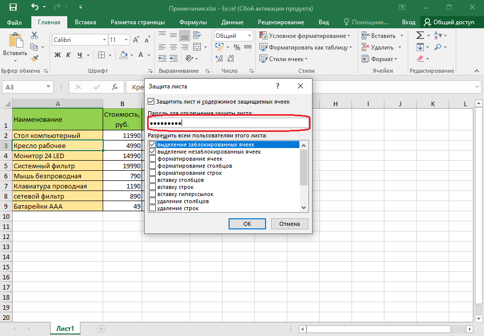
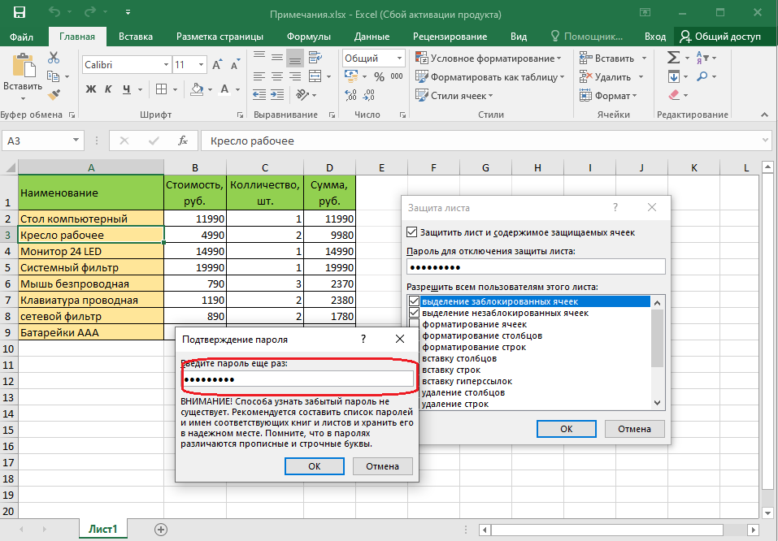
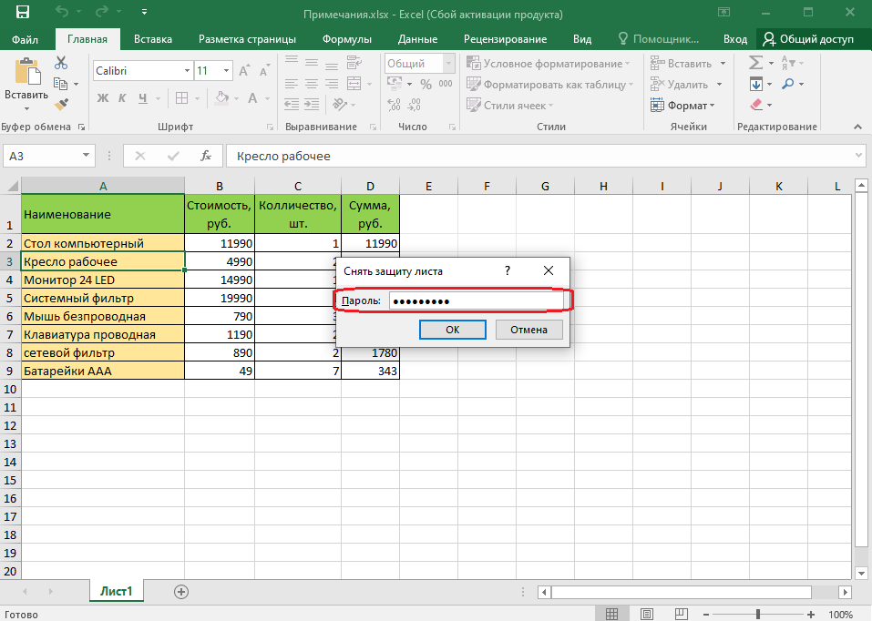
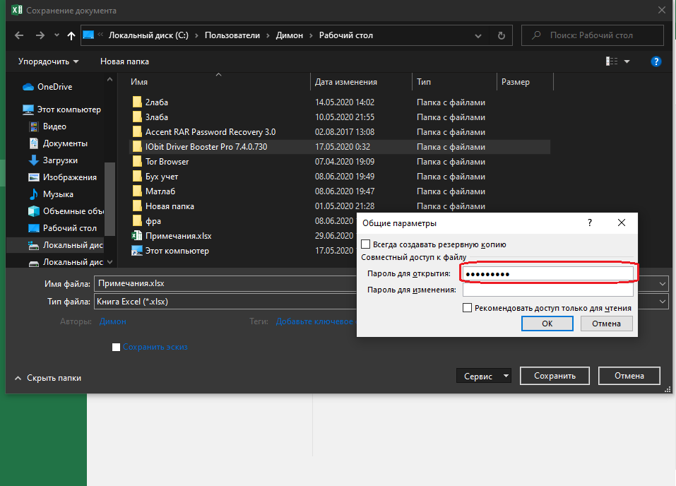
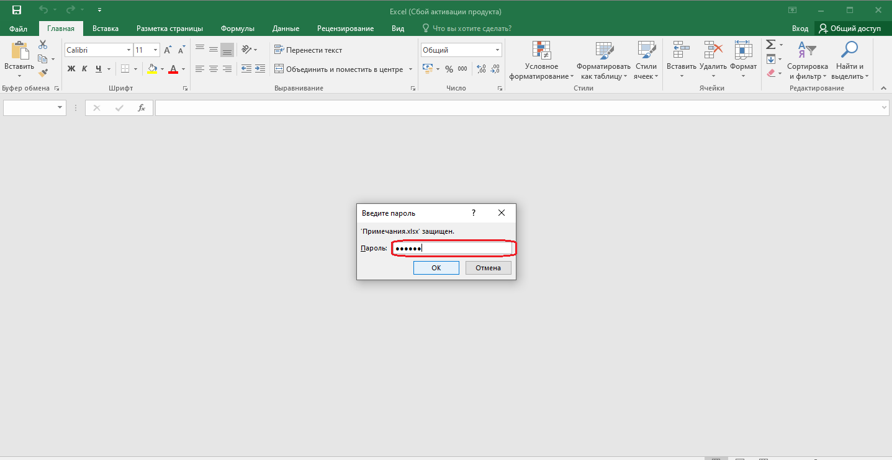

Microsoft Office Exel
Защита информации
Защита от несанкционированного просмотра и изменения
Уровни защиты
В Excel предусмотрено несколько уровней защиты, позволяющих управлять доступом к данным Excel и их изменением.Можно ограничить доступ к файлу, например несанкционированное открытие файла и/или сохранение в нем изменений.
Можно применить защиту к элементам книги, ограничив просмотр отдельных листов и/или изменение данных на листе.
Можно защитить элементы листа, например ячейки с формулами, запретив доступ к ним или предоставить доступ к определенным диапазонам.
Все уровни защиты являются не взаимоисключающими, а взаимодополняющими.
Пароли
Защита информации от просмотра и изменения основана на использовании паролей.Паролями можно ограничить доступ к файлу, внесение изменений в книгу и отдельные листы. В каждом из этих случаев требуется использовать пароль. Это может быть один и тот же пароль. Можно в каждом случае использовать разные пароли.
В качестве пароля можно использовать любой набор символов. В паролях можно использовать как русские, так и английские буквы. Однако, пароли, содержащие русские буквы, не могут быть правильно распознаны при использовании Excel на компьютерах Macintosh. При вводе пароля учитывается регистр букв.
Используйте надежные пароли, представляющие собой сочетание прописных и строчных букв, цифр и символов.
При вводе пароля он никогда не отображается на экране. Вместо каждого символа вводимого пароля отображается точка.
Нажимаем на Лист1 правой кнопклй мыши и нажимаем Защитить лист...

После ввода пароля и нажатия кнопки ОК всегда появляется окно подтверждения пароля, в котором необходимо пароль ввести еще раз. Это сделано во избежание случайного неправильного ввода пароля.

В Excel не существует стандартных средств восстановления забытых паролей. Так как при утере пароля доступ к защищенной книге или элементам листа невозможен, во избежание проблем рекомендуется держать в надежном месте список всех паролей и соответствующих им книг и листов.
При снятии защиты выводится окно для ввода пароля, в котором необходимо ввести пароль. Пароль при вводе не отображается на экране. Вместо каждого символа вводимого пароля отображается точка.

Защита от несанкционированного просмотра
Защита файлов от открытия
Пароль для защиты файла от несанкционированного открытия устанавливают при сохранении файла.
1. Нажмите кнопку файл, а затем выберите команду Сохранить как.
2. Выбираем дальнейший путь.
3. В окне Сохранение документа нажмите кнопку Сервис выберите команду Общие параметры.
4. В окне Параметры сохранения введите пароль в поле Пароль для открытия и нажмите кнопку ОК.

5. В окне подтверждения пароля введите его еще раз.
6. В окне Сохранение документа нажмите кнопку Сохранить. Если файл сохраняется под существующим именем в исходную папку, подтвердите замену существующего файла.
Открытие защищенных файлов
При открытии файла выйдет окно запроса пароля, в котором необходимо ввести пароль и нажать кнопку ОК.

^ Наверх